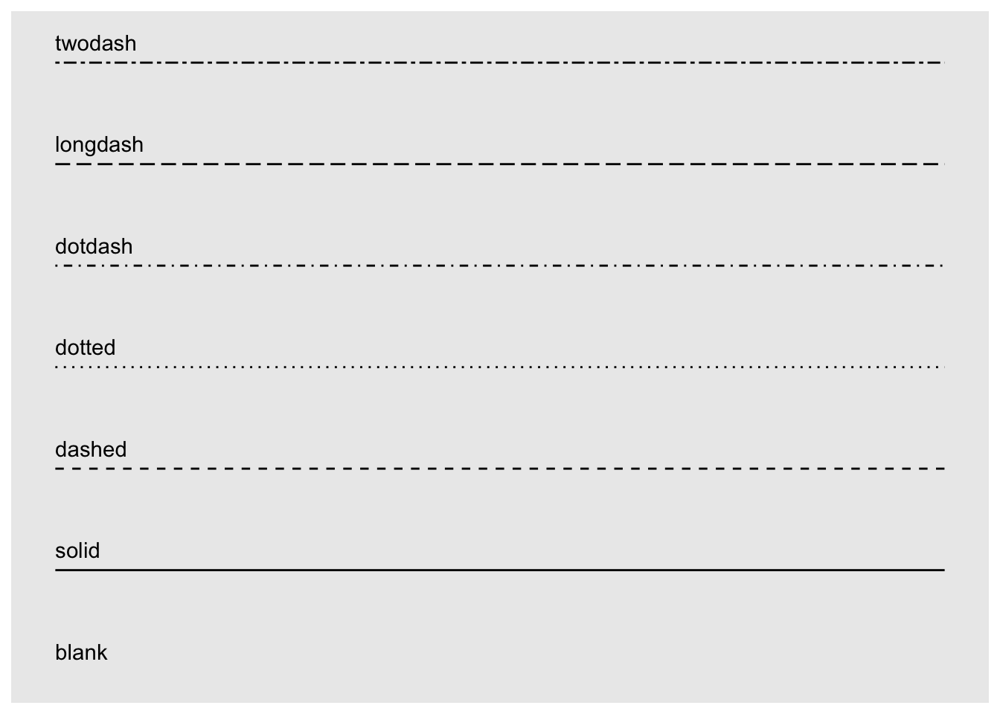
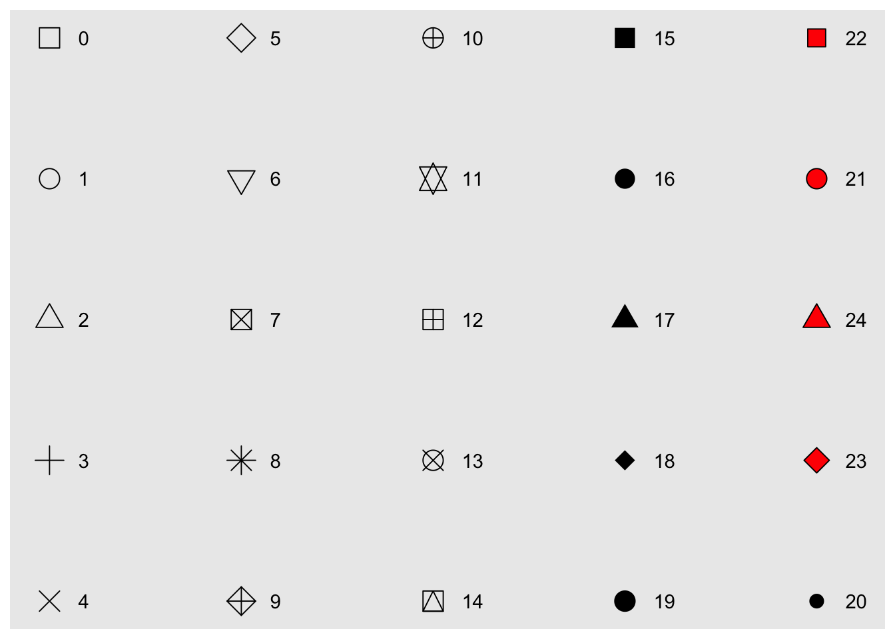
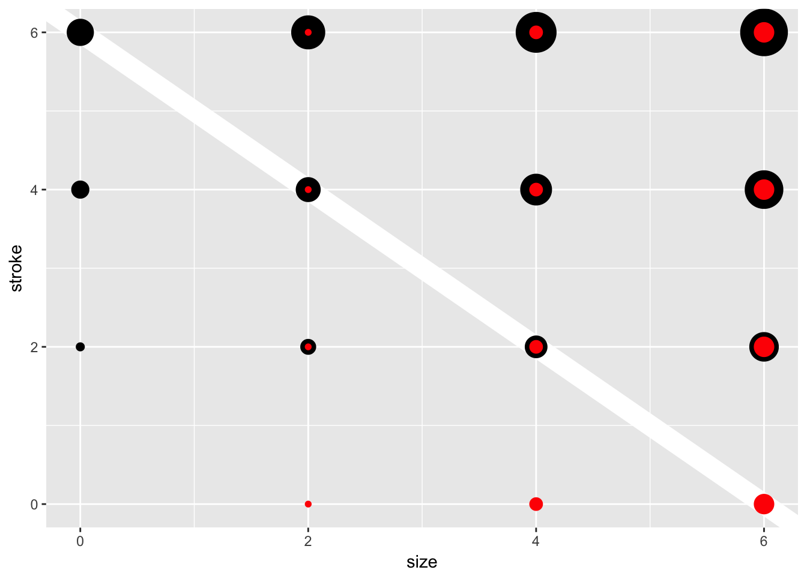
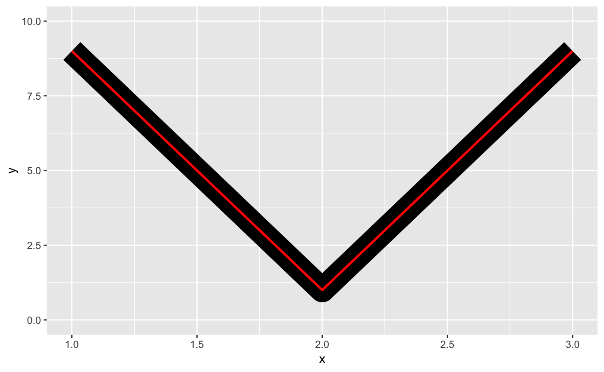

Aesthetic specifications
This vignette summarises the various formats that grid drawing functions take. Most of this information is available scattered throughout the R documentation. This appendix brings it all together in one place.
Colour
Colours can be specified with:
A name, e.g.,
"red". R has 657 built-in named colours, which can be listed withcolours(). The Stowers Institute provides a nice printable pdf that lists all colours: http://research.stowers-institute.org/efg/R/Color/Chart/.An rgb specification, with a string of the form
"#RRGGBB"where each of the pairsRR,GG,BBconsists of two hexadecimal digits giving a value in the range00toFFYou can optionally make the colour transparent by using the form
"#RRGGBBAA".An NA, for a completely transparent colour.
The munsell package, by Charlotte Wickham, provides a wrapper around the colour system designed by Alfred Munsell.
Line type
Line types can be specified with:
An integer or name: 0 = blank, 1 = solid, 2 = dashed, 3 = dotted, 4 = dotdash, 5 = longdash, 6 = twodash, as shown below:
lty <- c("blank", "solid", "dashed", "dotted", "dotdash", "longdash","twodash") linetypes <- data.frame( y = seq_along(lty), lty = lty ) ggplot(linetypes, aes(0, y)) + geom_segment(aes(xend = 5, yend = y, linetype = lty)) + scale_linetype_identity() + geom_text(aes(label = lty), hjust = 0, nudge_y = 0.2) + scale_x_continuous(NULL, breaks = NULL) + scale_y_continuous(NULL, breaks = NULL)
The lengths of on/off stretches of line. This is done with a string containing 2, 4, 6, or 8 hexadecimal digits which give the lengths of consecutive lengths. For example, the string
"33"specifies three units on followed by three off and"3313"specifies three units on followed by three off followed by one on and finally three off.The five standard dash-dot line types described above correspond to 44, 13, 1343, 73, and 2262.
The size of a line is its width in mm.
Shape
Shapes take four types of values:
An integer in \([0, 25]\):
shapes <- data.frame( shape = c(0:19, 22, 21, 24, 23, 20), x = 0:24 %/% 5, y = -(0:24 %% 5) ) ggplot(shapes, aes(x, y)) + geom_point(aes(shape = shape), size = 5, fill = "red") + geom_text(aes(label = shape), hjust = 0, nudge_x = 0.15) + scale_shape_identity() + expand_limits(x = 4.1) + scale_x_continuous(NULL, breaks = NULL) + scale_y_continuous(NULL, breaks = NULL)
A single character, to use that character as a plotting symbol.
A
.to draw the smallest rectangle that is visible, usualy 1 pixel.An
NA, to draw nothing.
Note that shapes 21-24 have both stroke colour and a fill. The size of the filled part is controlled by size, the size of the stroke is controlled by stroke. Each is measured in mm, and the total size of the point is the sum of the two. Note that the size is constant along the diagonal in the following figure.
sizes <- expand.grid(size = (0:3) * 2, stroke = (0:3) * 2)
ggplot(sizes, aes(size, stroke, size = size, stroke = stroke)) +
geom_abline(slope = -1, intercept = 6, colour = "white", size = 6) +
geom_point(shape = 21, fill = "red") +
scale_size_identity()
Text
Font face
There are only three fonts that are guaranteed to work everywhere: “sans” (the default), “serif”, or “mono”:
df <- data.frame(x = 1, y = 3:1, family = c("sans", "serif", "mono"))
ggplot(df, aes(x, y)) +
geom_text(aes(label = family, family = family))
It’s trickier to include a system font on a plot because text drawing is done differently by each graphics device (GD). There are five GDs in common use (png(), pdf(), on screen devices for Windows, Mac and Linux), so to have a font work everywhere you need to configure five devices in five different ways. Two packages simplify the quandary a bit:
showtextmakes GD-independent plots by rendering all text as polygons.extrafontconverts fonts to a standard format that all devices can use.
Both approaches have pros and cons, so you will to need to try both of them and see which works best for your needs.
Justification
Horizontal and vertical justification have the same parameterisation, either a string (“top”, “middle”, “bottom”, “left”, “center”, “right”) or a number between 0 and 1:
- top = 1, middle = 0.5, bottom = 0
- left = 0, center = 0.5, right = 1
just <- expand.grid(hjust = c(0, 0.5, 1), vjust = c(0, 0.5, 1))
just$label <- paste0(just$hjust, ", ", just$vjust)
ggplot(just, aes(hjust, vjust)) +
geom_point(colour = "grey70", size = 5) +
geom_text(aes(label = label, hjust = hjust, vjust = vjust))
Note that you can use numbers outside the range (0, 1), but it’s not recommended.